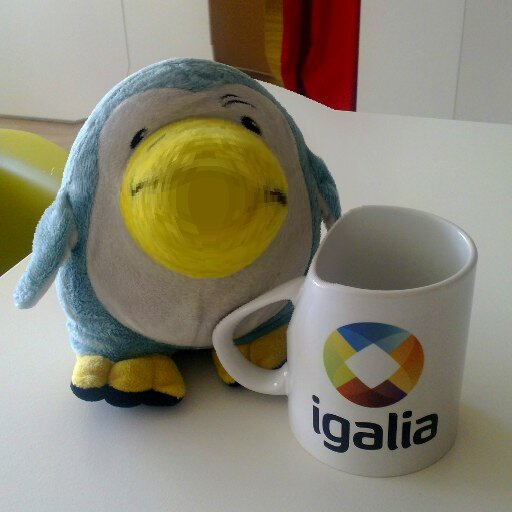

What is it?
Gallery Enlarge & Shrink Plugin is a filter for the Gallery application of the N9 (and N950) MeeGo devices which applies a radial distortion to a picture.
From the Wikipedia,
Barrel distortion
In barrel distortion, image magnification decreases with distance from the optical axis. The apparent effect is that of an image which has been mapped around a sphere (or barrel). Fisheye lenses, which take hemispherical views, utilize this type of distortion as a way to map an infinitely wide object plane into a finite image area.
Pincushion distortion
In pincushion distortion, image magnification increases with the distance from the optical axis. The visible effect is that lines that do not go through the centre of the image are bowed inwards, towards the centre of the image, like a pincushion. A certain amount of pincushion distortion is often found with visual optical instruments, e.g., binoculars, where it serves to eliminate the globe effect.
These distortions provide enlarge or shrink effects, also know as punch or pinch respectively.
Installing:
The easiet way of installing Gallery Enlarge & Shrink Plugin is through its entry in the Nokia Store.
Screenshots:
-

Penguin and mug, after applying the enlarge effect
Applying the filter to a picture:
- From the application grid, open Gallery.
- Pick a picture with a size equal or smaller than 512x512px (see Known Issues below).
- Tap on the object menu and select Edit.
- Tap on Enlarge - Shrink.
- Choose the effect to be applied: Enlarge or Shrink.
- Select the radius of the effect in the radius slider.
- Tap on the screen to center the effect around the given point.
Video explanation:
Get support:
Please, feel free to report any issues you might find in our bug tracker. If you prefer, you can also send me an email to apuentes at igalia.